Changelog for QGIS 3.24¶

In Memorium: This release is named ‘Tisler’ after a small Norwegian island that was a favourite visiting place of Håvard Tveite who passed away in May 2021. Håvard was a very active member of the QGIS community, providing valuable input to the documentation, developing numerous plugins, and taking care of the QGIS Resources Sharing Repository to name just a few of his contributions. The map on the QGIS 3.24 splash screen is an orienteering map that Håvard has created. He liked spending some time each year map-making at Tisler.
We would also like to extend a big thank you to the developers, documenters, testers, and all the many folks out there who volunteer their time and effort (or fund people to do so) to make these releases possible. From the QGIS community, we hope you enjoy this release! If you wish to donate time, money, or otherwise get involved in making QGIS more awesome, please wander along to QGIS.ORG and lend a hand!
For a whirlwind tour of all the new functionalities introduced, you can view the highlight reel video on youtube at https://youtu.be/gVgR4Oxqtkk
QGIS is supported by donors and sustaining members. A current list of donors who have made financial contributions large and small to the project can be seen on our donors list. If you would like to become an official project sustaining member, please visit our sustaining member page for details. Sponsoring QGIS helps us to fund our regular developer meetings, maintain project infrastructure, and fund bug fixing efforts. A complete list of current sponsors is provided below - our very great thank you to all of our sponsors!
QGIS is Free software and you are under no obligation to pay anything to use it - in fact, we want to encourage people far and wide to use it regardless of what your financial or social status is - we believe empowering people with spatial decision-making tools will result in a better society for all of humanity.
-
Feature: Marker/hash line: offsets along line by “percent” of line length (and negative offsets!)
Feature: Control whether first/last vertex placements apply to every part of multi-part geometries
Feature: Marker/hash line “on vertices” placement option replaced by “on inner vertices”
Feature: Control the color model used when interpolating gradient ramps
Feature: Choice of clipping behaviour for line pattern fills
Feature: Coordinate reference mode setting for line pattern and point pattern fill symbol layers
Feature: Expression functions for creating triangular/square/curved waves
-
Feature: Show all layer field names when building expressions
Feature: Optional minimum overlap area and circle radius for overlay_intersection
Feature: Rotate parts of multi-part geometries independently with “rotate” expression function
Feature: Filter by multiple attributes for get_feature function
-
Feature: Friendlier errors from XYZ raster tiles, WMS and vector tiles
Feature: Add out-of-the-box connection to Mapzen Global Terrain tiles
Feature: Template parameter {usage} for XYZ raster and vector tiles
Feature: Delimited text type overrides and other improvements
Feature: New authentication method for HTTP header based authentication
Feature: Expose secondary PostGIS geometry columns as referenced geometries
User Interface¶
Feature: Retrieve map extents directly from layout maps and bookmarks¶
This is a handy time-saver! The extent widget in QGIS now allows you to directly retrieve and match the extent of maps from bookmarks and layouts in your project.
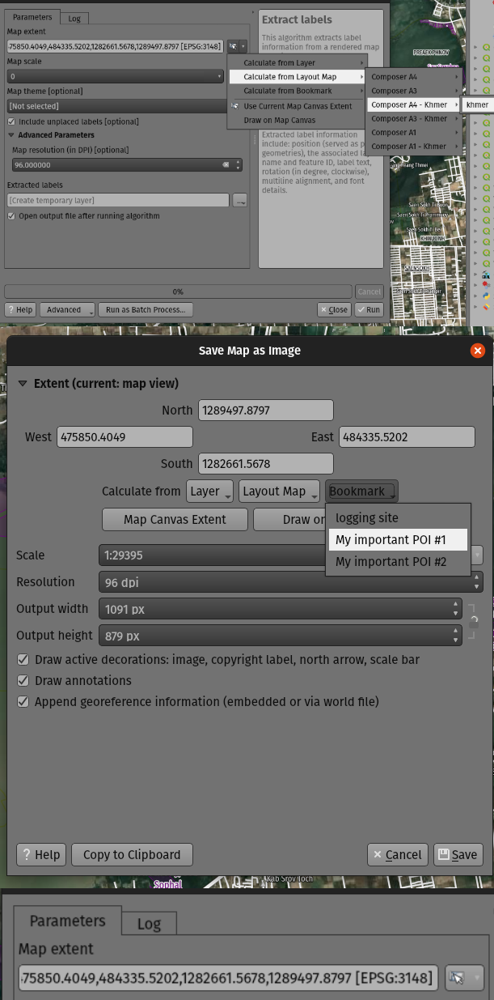
This feature was developed by Mathieu Pellerin
Feature: Easier creation of custom coordinate reference systems¶
We’ve added a new option when selecting a Coordinate Reference System (CRS) which allows you to just directly enter a custom CRS definition (from proj or WKT strings), instead of requiring you to specifically add these custom CRS to the projection database first.
It’s much friendlier when you just want to define a custom projection for a single-purpose use, e.g. an overview map with a projection designed for a particular latitude and longitude location.

This feature was developed by Nyall Dawson
Symbology¶
Feature: Marker/hash line: offsets along line by “percent” of line length (and negative offsets!)¶
You can now specify the offset along line in percentage for both marker and hash line symbol layer types. (These offsets are treated as percentages of the overall line length).
Additionally, when the offset along line setting for a marker or hash line symbol layer is longer than the size of a closed ring, QGIS will now treat the offset as continuing to loop around the ring. For example, setting the offset to 150% results in the offset being treated as 50% of the length of the closed ring.
Lastly, we also made it possible to specify a negative offset along line for a closed ring. Negative offsets are calculated backwards along the ring.

This feature was funded by North Road, thanks to SLYR
This feature was developed by Nyall Dawson
Feature: Control whether first/last vertex placements apply to every part of multi-part geometries¶
This new symbology option for the Marker and Hash line symbol types allows you to control whether the First and Last Vertex placement options should apply to every part of a multi-part line (or polygon) individually, or only the very first and last vertex in the whole multi-part geometry.

This feature was funded by North Road, thanks to SLYR
This feature was developed by Nyall Dawson
Feature: Marker/hash line “on vertices” placement option replaced by “on inner vertices”¶
The new On Inner Vertices mode places the symbols on all inner vertices only (i.e. all vertices except the first or last vertex).
Previously, the old “Vertex” mode put symbols on the first and last vertex as well as all inner vertices, making it basically impossible to style a line with a different marker on the first or last vertex to the rest of the line’s vertices. With the new On Inner Vertices option it’s easy to create a style where a line has a different marker on the first or last vertex vs the rest of the vertices!
(This change is paired nicely with the switch to using checkboxes for the placement options – to get a marker to show on all vertices, just make sure the first, last and inner vertices options are checked).

This feature was funded by North Road, thanks to SLYR
This feature was developed by Nyall Dawson
Feature: Control the color model used when interpolating gradient ramps¶
When rendering a gradient ramp some combinations of gradient colors will cause the ramp to pass through murky grey mid-tones if the interpolation is performed using red/green/blue channels independently. An alternative approach is to instead interpolate colors via their hue/saturation/lightness or value channels. This approach can avoid these desaturated mid tones, resulting in more visually pleasing gradients.
We now allow the color specifcation to be set per stop in a multi-stop color gradient to give users control over which interpolation technique to use. There’s also an option to control the direction which interpolation should follow for the Hue component of a HSL/HSV color spec interpolation,m which can help avoid unwanted interpolation through the entire rainbow hue spectrum in some circumstances!
This video shows the difference in mid-tones of a color ramp, where the RGB interpolation results in murky colors, while the HSL/HSV interpolation remains nice and vibrant.
This feature was funded by North Road, thanks to SLYR
This feature was developed by Nyall Dawson
Feature: Resizable thumbnails in the style manager dialog¶
We’ve added a new slider to control the size of thumbnails shown in the style manager dialog, because sometimes these thumbnail sizes are just too small to get a good representation of a symbol!
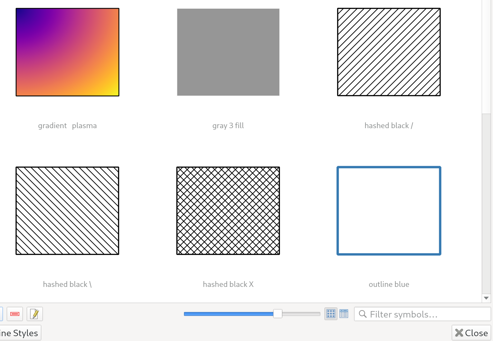
This feature was funded by North Road, thanks to SLYR
This feature was developed by Nyall Dawson
Feature: “Lineburst” symbols¶
We’ve added a brand new “Lineburst” symbol layer type, which renders a gradient along the width of a line (as opposed to the Interpolated Line renderer, which renders a gradient along the length of a line). It’s just like the Shapeburst fill symbol type, but for lines!

This feature was funded by North Road, thanks to SLYR!
This feature was developed by Nyall Dawson
Feature: “Raster Line” symbols¶
We’re super-excited to bring you this brand new line symbol type, which allows you to render a raster image following a line feature’s shape. This symbol type opens a whole new realm of possibilities for QGIS symbology, and is especially useful when creating maps in a hand drawn or painted style.
Options are available to control:
the picture path (including data defined path)
line width
opacity
line join and cap styles
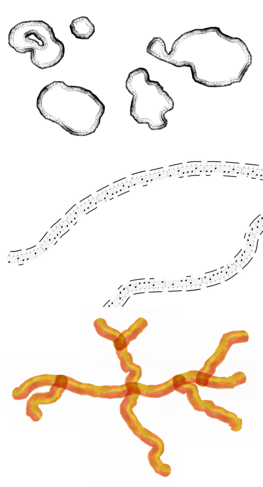
This feature was funded by North Road, thanks to SLYR
This feature was developed by Nyall Dawson
Feature: Choice of clipping behaviour for line pattern fills¶
You can now control how lines in a line pattern fill symbol are clipped to polygon shapes. The available options include:
Clip During Render Only: lines are created covering the whole bounding box of the feature which are then clipped while drawing. The line extremities (beginning and end) will not be visible (this is same behaviour as older QGIS releases).
Clip Lines Before Render: lines are clipped to the exact shape of the polygon prior to rendering. The line extremities (including cap styles, start/end marker line symbols, etc) will be visible, and may sometimes extend outside of the polygon (depending on the line symbol settings).
No Clipping: no clipping at all is done - the lines will cover the whole bounding box of the feature
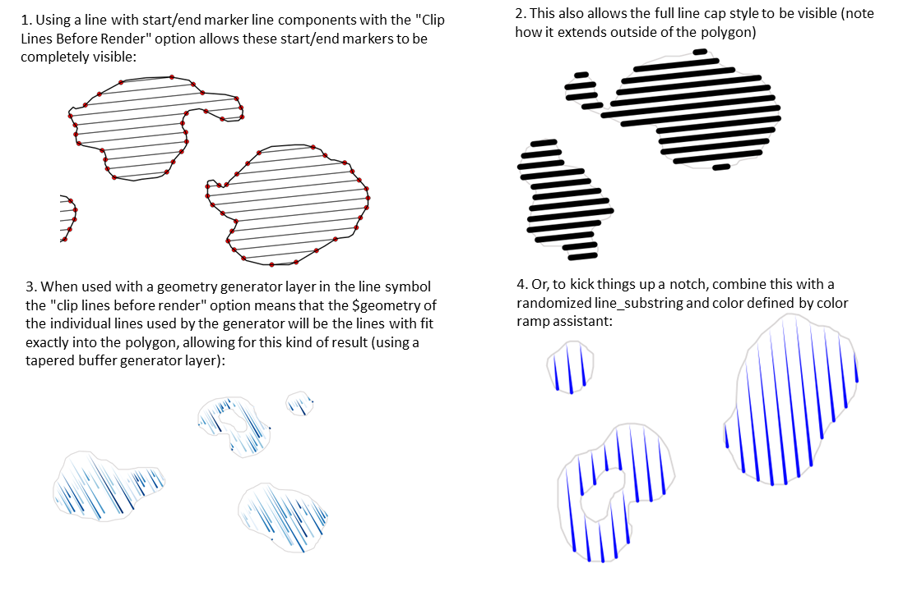
This feature was funded by North Road, thanks to SLYR
This feature was developed by Nyall Dawson
Feature: Improved rendering of line pattern fills¶
When exporting to a vector format (e.g. PDF or SVG) or when a line subsymbol has dynamic (data defined) properties, we now automatically switch to a line-by-line based approach to render the fill. (Previously, a tiled pattern approach was always used, which often resulted in undesirable artefacts and visible seams in the pattern).
Some of the many benefits of this change include:
Smaller PDF/SVG output file sizes – the line pattern fills aren’t stored as raster images in the output so the overall file size will often be much smaller
PDF/SVG exported files are easier to modify in external applications (such as Inkscape or Adobe Illustrator) for post production, as each individual line in the pattern can be modified.
Better quality PDF/SVG outputs, since the fill isn’t DPI dependent and looks pixel perfect regardless of how far in you zoom
No visible artifacts at certain angles, distances or with certain line symbol styles
And even more excitingly, it opens the door for a range of new symbol styles, for example:
line patterns where the individual lines change color/width/dash/ etc.
line patterns with marker line symbols on center point/etc
geometry generator effects per line, e.g. wavy line patterns, hand drawn line styles, etc

This feature was funded by North Road, thanks to SLYR
This feature was developed by Nyall Dawson
Feature: Rotation angle for point pattern fills¶
Now you can specify an optional rotation angle for point pattern fills, which causes the entire point pattern to be angled. This can be extremely useful when overlaying multiple point pattern fills!
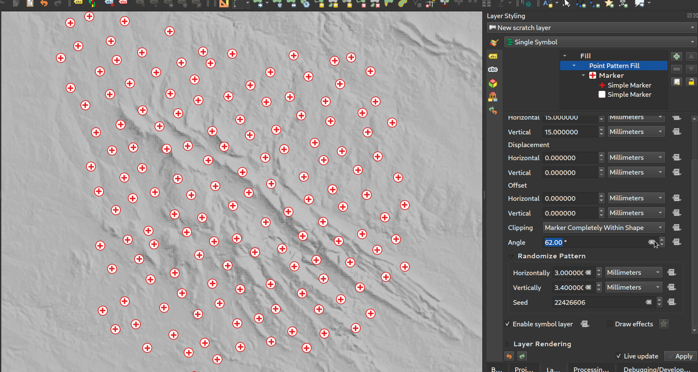
This feature was funded by North Road, thanks to SLYR
This feature was developed by Nyall Dawson
Feature: Randomized point offsets for point pattern fills¶
This (optional) setting allows each point in a point pattern fill to be randomly shifted up to the specified maximum distance in the x or y direction. You can specify the maximum offset in millimeters, points, map units, or even “percentage” units (where percentage is relative to the pattern width or height).
You can set an optional random number seed to avoid the symbol patterns “jumping” around between map refreshes. Data defined overrides are also supported.
The main difference between this new setting and the existing random marker fill symbol type is that the random offset with a point pattern allows for quasi-“regular” placement of markers – because the points in the pattern are effectively constrained to a grid, this allows creation of semi-random fills which don’t have empty areas or overlapping markers. (As opposed to the random marker fill, which will always place points completely randomly… sometimes resulting in visual clusters of points or unwanted empty areas).

This feature was funded by North Road, thanks to SLYR
This feature was developed by Nyall Dawson
Feature: Coordinate reference mode setting for line pattern and point pattern fill symbol layers¶
Line pattern and point pattern fill symbol layers have a new coordinate reference mode setting to tweak the anchoring of the patterns. Practically speaking, this allows for patterns to nicely align across adjacent and overlapping features.


This feature was developed by Mathieu Pellerin
Feature: Control marker clipping for point pattern fills¶
This new option gives you control over how markers are clipped in a point pattern fill. The available options include:
Clip to shape: markers will be clipped by the boundary of the shape, so “cut off” markers may be visible (same behaviour as previous QGIS versions)
Marker centroid within shape: markers will be drawn only if their centroid falls within the shape, and markers will not be clipped to the shape boundary
Marker Completely Within Shape: markers will only be drawn if they fit completely within the shape
No clipping: whole marker symbols will be drawn if any part of the marker falls within the shape

This feature was funded by North Road, thanks to SLYR
This feature was developed by Nyall Dawson
Feature: Expression functions for creating triangular/square/curved waves¶
We’ve added some new expression functions which produce “wavy lines” along geometry boundaries. Multiple wave shapes are available, including:
Wave (sine-like)
Triangular
Square
In addition, expressions functions have also been added for creating waves in a regular fashion or with randomization.
When used with geometry generators, these expressions can be used for some very advanced cartographic effects!
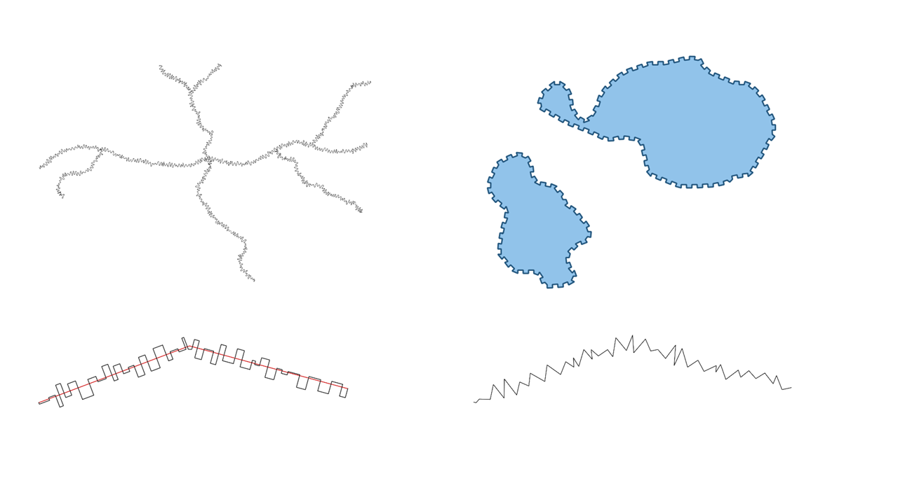
This feature was funded by North Road, thanks to SLYR
This feature was developed by Nyall Dawson
Labelling¶
Feature: “Percentage” units for text buffer size, shadow offset and blur radius¶
We now allow the sizes for text buffer, shadow offset and shadow blur radius to be set as a percentage of the font size. This is desirable as it allows the creation of text formats where the components nicely scale as the text size is changed, instead of having fixed buffer/shadow sizes that need to be independently adjusted when the text size changes.

This feature was funded by North Road, thanks to SLYR
This feature was developed by Nyall Dawson
Feature: Data defined label positions by point geometries¶
You can now set the data defined placement of labels to be bound to a point geometry field or expression. (Previous QGIS versions only allowed data defined placement to be set via two separate numeric x and y fields).
This change also allow you to use the Move Label tool to change the position of a label which is bound to a point geometry field, causing the new label position to be stored as a point geometry in that attribute.

This feature was funded by Swiss QGIS user group
This feature was developed by Damiano Lombardi
Feature: Stretched text for labels and text formats¶
This improvement allows your text to be horizontally stretched or condensed by a percentage factor. It’s often handy for tweaking the widths of fonts to fit a bit of extra text into labels (when used sparingly, that is… you can certainly abuse font stretching with some horrendous results!)
Note: This improvement requires Qt 6.3+ or KDE’s 5.15 fork. (On other builds the stretch options are hidden and can’t be set)
This feature was funded by North Road, thanks to SLYR
This feature was developed by Nyall Dawson
Rendering¶
Feature: Rendering layers as groups¶
This is another exciting cartographic enhancement which opens up a whole new arena of symbology and map visualisation in QGIS!
Prior to this improvement, QGIS supported grouping layers within the layer tree as a means of structuring projects, but these groups had no impact on how the component layers were rendered. In QGIS 3.24 we’ve introduced a new option allowing these layer groups to “Render as Group”, which causes all the component layers to be rendered as a single flattened object during map renders.
This option is available within the layer styling dock whenever a group layer is selected. This panel also allows you to control the appearance of the group as a whole, with options for the overall group opacity, blend mode, and layer effects!
Additionally, when a layer is contained in a group which has the new Render as Group option activated, new blending modes will be available which perform “clipping” style operations during the render. These allow you to achieve some very powerful results, such as clipping the render of one layer’s content by the content in a second “mask” layer!

This feature was funded by Andrew Fletcher.
This feature was developed by Nyall Dawson
Feature: Support for “Line pattern” when converting Mapbox GL vector tile layer styles¶
Making use of the brand new raster line symbol layer, QGIS 3.24 now properly renders Mapbox GL line pattern styling for newly-added vector tile layers.
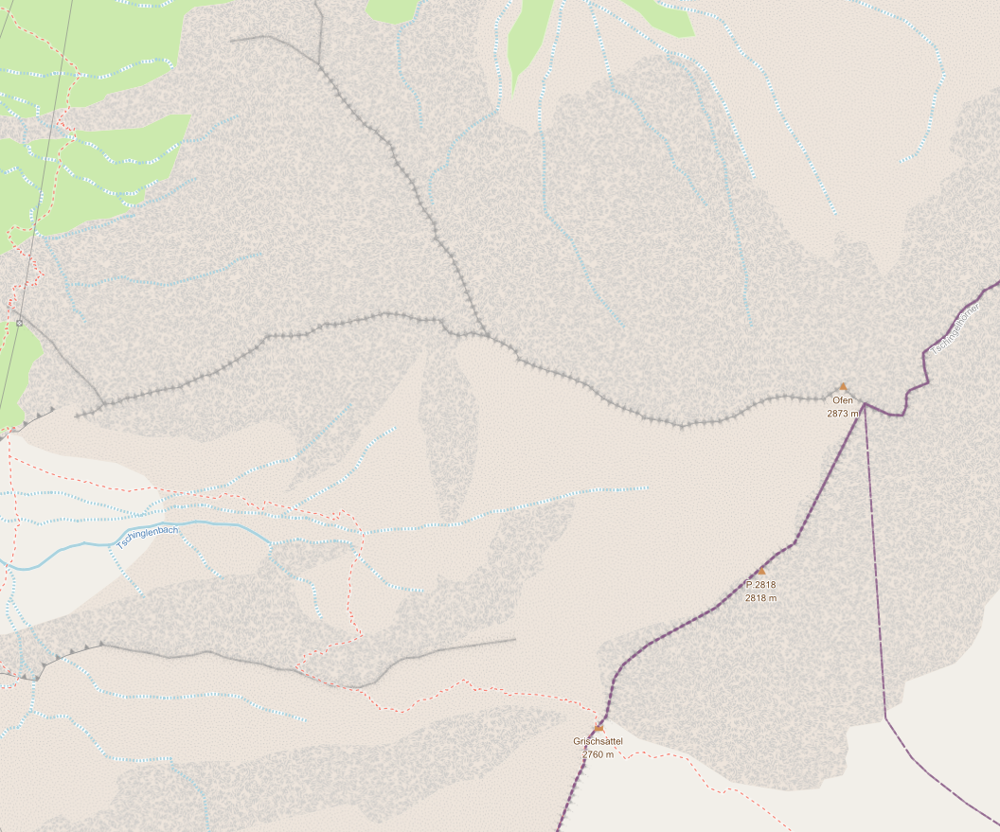
This feature was developed by Mathieu Pellerin
Feature: Support background styles for Mapbox GL-styled vector tile layers¶
We now correctly render any predefined background styling present in Mapbox GL-styled vector tile layers. This dramatically improves the appearance of vector tile layers with dark styles!
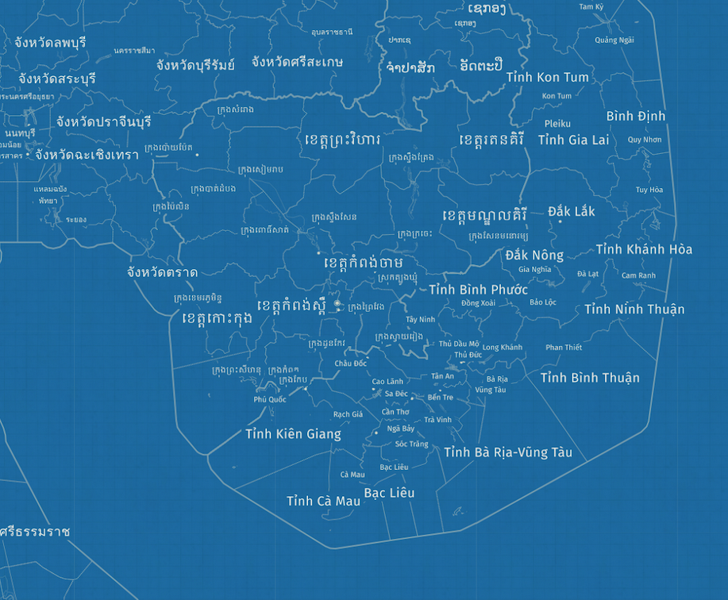
This feature was developed by Mathieu Pellerin
3D Features¶
Feature: Respect Z ordering when rendering point clouds in 2D¶
We’ve added an option to render point clouds according to their Z-order in 2D map views. With the new bottom-to-top ordering option enabled, points with larger Z values will cover lower points – resulting in the appearance of a true orthographic photo. There’s also an option for reverse sorting (top-to-bottom), where the scene appears as if viewed from below.
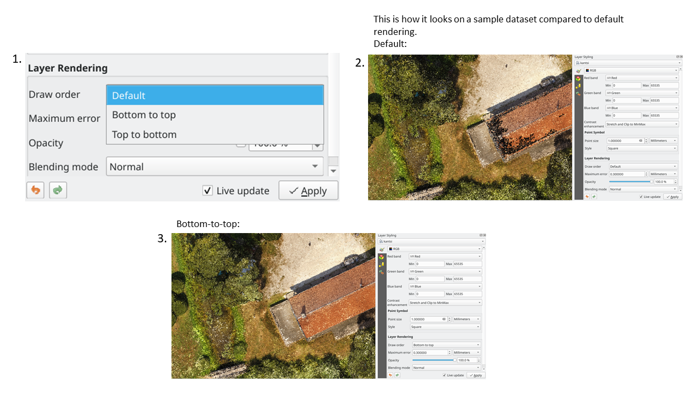
This feature was funded by Crowdfunding: Enhancing elevation data and point clouds in QGIS
This feature was developed by Stefanos Natsis (Lutra Consulting)
Feature: Dock/Undock 3D views¶
We’ve been aware that using dock widgets for 3D maps can be inconvenient, and in many situations these are frustrating to resize and move as they are prone to re-dock as you adjust their sizes! With QGIS 3.24 we added the ability to switch 3D maps from a dockable widget to a top-level window (and back to a dock widget), so that these map views can now be managed, resized and moved just like a standard application window.

This feature was funded by Crowdfunding: Enhancing elevation data and point clouds in QGIS
This feature was developed by Nedjima Belgacem (Lutra Consulting)
Feature: 3D map view manager¶
Previously, if you closed a 3D map view and then saved your project, the 3D map view and all its settings would be lost when you reopen that project. So in QGIS 3.24 we’ve added a “3D map view manager” that takes care of listing, removing, renaming and duplicating 3D map views in your projects!
We’ve also added a new “3D Map Views” menu, which contains all your created 3D map views for easy access!

This feature was funded by Crowdfunding: Enhancing elevation data and point clouds in QGIS
This feature was developed by Nedjima Belgacem (Lutra Consulting)
Print Layouts¶
Feature: Full text rendering capabilities for layout text labels¶
In older QGIS releases you had to revert to hacky tricks like using HTML and CSS to add effects like drop shadows to text in your map layouts. Hack no more! In 3.24 we now allow you to use the familiar properties from the labeling text options for text on layouts too! This means you can now add shadows, text buffers, backgrounds, letter and word spacing, etc. all on the text items in your layouts.
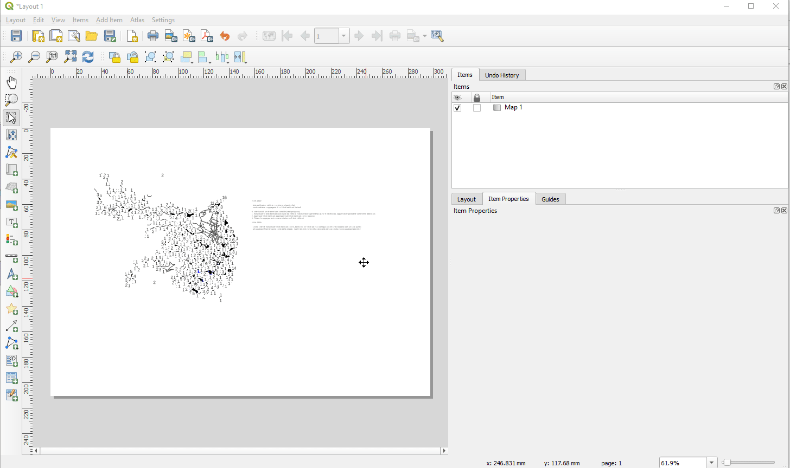
This feature was funded by North Road, thanks to SLYR
This feature was developed by Nyall Dawson
Expressions¶
Feature: geometry_type function¶
The new geometry_type function returns the high-level type of a geometry (i.e. ‘Point’, ‘Line’ or ‘Polygon’).
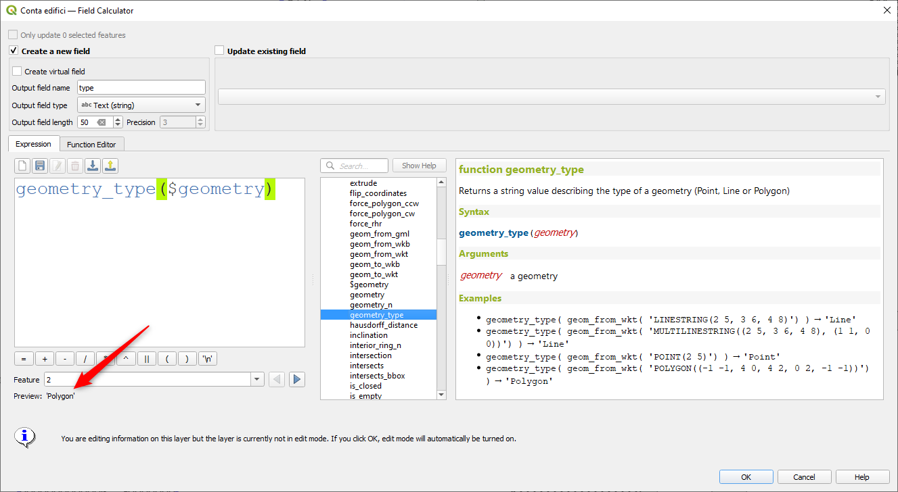
This feature was funded by North Road, thanks to SLYR
This feature was developed by Nyall Dawson
Feature: Overlay intersects sort by intersection size¶
We have added further enhancements to the overlay_intersects function. The change adds two new optional arguments to the existing function:
return_details: only valid when used with an expression, set this to true to return a list of maps containing (key names in quotes) the feature ‘id’, the expression ‘result’ and the ‘overlap’ value, the ‘radius’ of the maximum inscribed circle is also returned when the target layer is a polygon.
sort_by_intersection_size: only valid when used with an expression, set this to true to return the results ordered by the overlap value in descending order.

This feature was funded by Kanton Solothurn, Amt für Geoinformation
This feature was developed by Alessandro Pasotti
Feature: Show all layer field names when building expressions¶
As a handy time-saver, we now make a list of all field names from all layers in your project available directly in the expression builder. If you double-click any of these field names, they’ll be added to your expression as string values ('field_name').
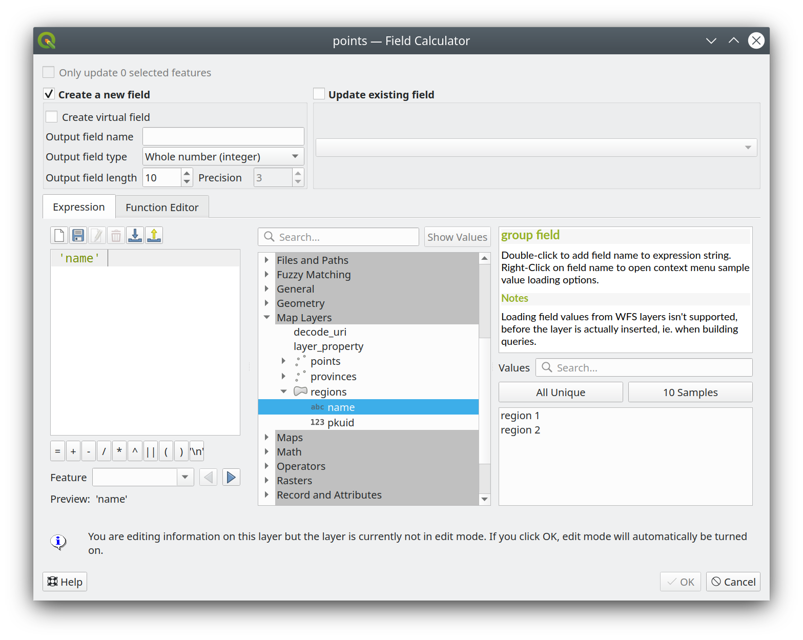
This feature was funded by ARPA Piemonte
This feature was developed by Alessandro Pasotti
Feature: represent_attributes function¶
This new function returns a map with all attribute (field) names as the keys and the configured representation values as values. The representation value for the attributes depends on the configured widget type for each attribute.
The function can be used with zero, one, or more arguments:
If called with no parameters, the function will return the representation of the attributes of the current feature in the current layer.
If called with a ‘feature’ parameter only, the function will return the representation of the attributes of the specified feature from the current layer.
If called with a ‘layer’ and a ‘feature’ parameter, the function will return the representation of the attributes of the specified feature from the specified layer.
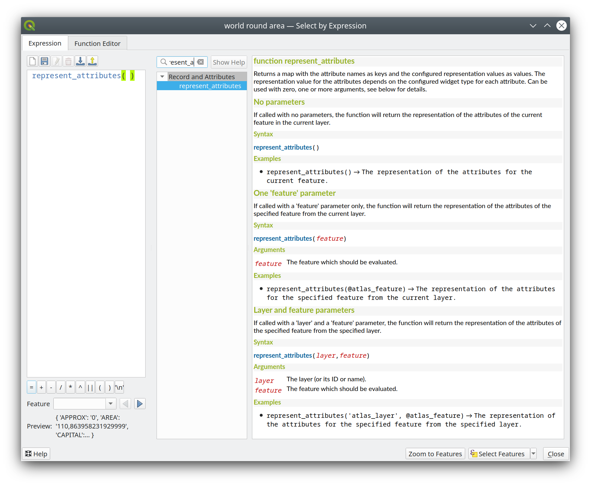
This feature was funded by Kanton Solothurn
This feature was developed by Alessandro Pasotti
Feature: Optional minimum overlap area and circle radius for overlay_intersection¶
We have added two optional arguments to the overlay_intersection() expression function:
min_overlap: for polygons an optional minimum area in current feature squared units for the intersection (if the intersection results in multiple polygons the intersection will be returned if at least one of the polygons has an area greater or equal to the value), for lines an optional minimum length in current feature units (if the intersection results in multiple lines the intersection will be returned if at least one of the lines has a length greater or equal to the value)min_inscribed_circle_radius: for polygons only an optional minimum radius in current feature units for the maximum inscribed circle of the intersection (if the intersection results in multiple polygons the intersection will be returned if at least one of the polygons has a radius for the maximum inscribed circle greater or equal to the value). Read more on the underlying GEOS predicate, as described in PostGIS ST_MaximumInscribedCircle function.

This feature was funded by Kanton Solothurn
This feature was developed by Alessandro Pasotti
Feature: map_prefix_keys function¶
In QGIS 3.24 we’ve added a new map_prefix_keys function that takes a map and a prefix, the function returns a map with all keys prefixed by the prefix.
map_prefix_keys(map('1','one','2','two'), 'prefix-'){ 'prefix-1': 'one', 'prefix-2': 'two' }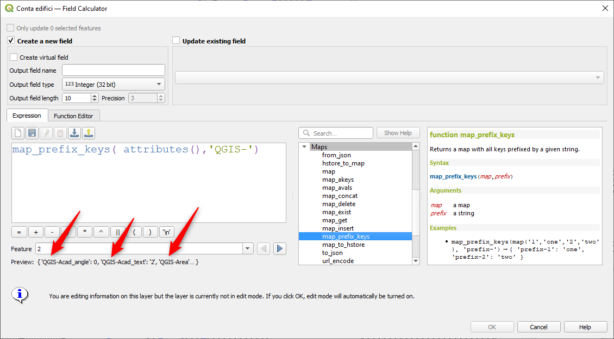
This feature was funded by Kanton Solothurn
This feature was developed by Alessandro Pasotti
Feature: densify_by_count and densify_by_distance functions¶
This functionality, which was previously only available through the Processing toolbox, is now available for use in expressions!
This feature was funded by North Road, thanks to SLYR
This feature was developed by Nyall Dawson
Feature: Rotate parts of multi-part geometries independently with “rotate” expression function¶
The new “per_part” option for the “rotate” expression function allows you to rotate each part of a multi-part geometry around the center of each part (instead of the center of the geometry as a whole). This enhancement is designed to help out symbology when the rotate function is used as a cartographic tool as part of a geometry generator symbol layer.

This feature was funded by North Road, thanks to SLYR
This feature was developed by Nyall Dawson
Feature: apply_dash_pattern function¶
This exciting new expression function applies a dash pattern to a geometry, returning a MultiLineString geometry which is the input geometry stroked along each line (or ring) using a dashed line pattern.
Rules can be set to control how the dash pattern is adjusted at line endings. If you specify a start rule or end rule, then the “adjustment” option defines whether both dash and gaps, or only dash or gap sizes are adjusted to apply these rules.
You can also set an optional pattern offset to specify how far along the pattern the result should start at.
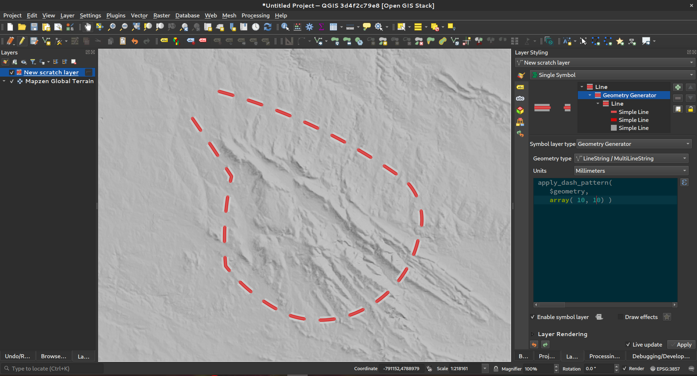
This feature was funded by North Road, thanks to SLYR
This feature was developed by Nyall Dawson
Feature: scale function¶
This new expression function allows you to scale (resize) a geometry. Just like the ‘rotate’ function, the function accepts an optional point position to apply the scaling from. If no anchor point is not specified then scaling is done from the center of the geometry’s bounding box.
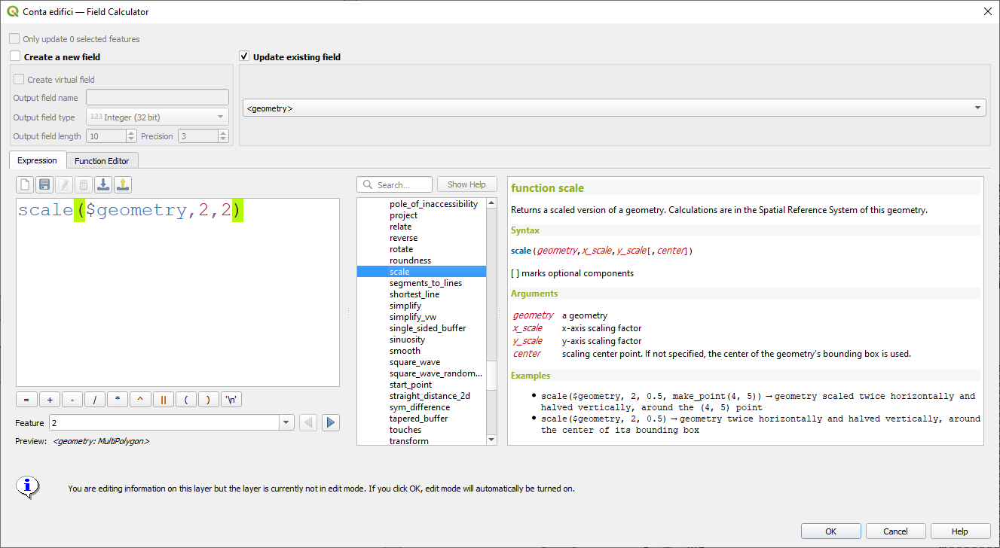
This feature was funded by North Road, thanks to SLYR
This feature was developed by Nyall Dawson
Feature: Filter by multiple attributes for get_feature function¶
We extended the get_feature function to allow multi-attribute filtering, by adding an option to pass an array of filter values to the input.
This feature was developed by Alex
Data Management¶
Feature: Multiedit support for relation editor¶
We’ve added a new multi edit mode for the relation editor, which allows the rapid addition of child features to multiple parent features. This improves efficiency for data management operations, such as the ability to select multiple trees and adding a maintenance item to all of them in one click.
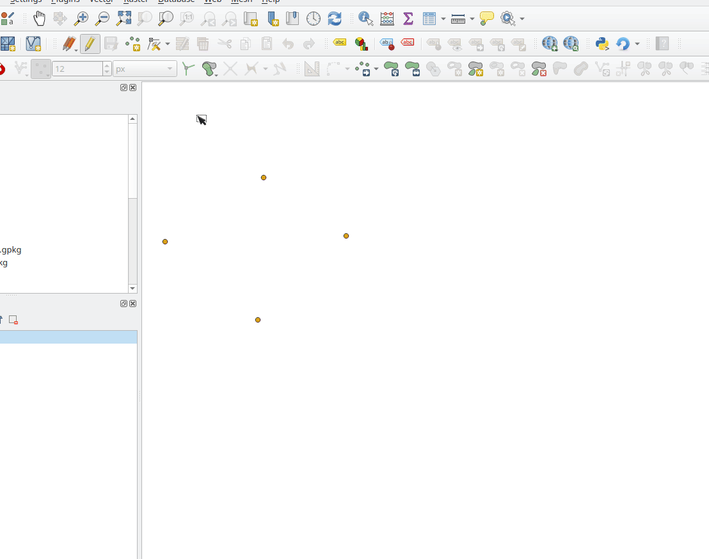
This feature was funded by QGIS Model Baker
This feature was developed by Damiano Lombardi, OPENGIS.ch
Metadata and Metasearch¶
Feature: Support for OGC API - Records in MetaSearch¶
We updated the MetaSearch tool to provide support for the OGC API - Records (OARec) standard. As part of the OGC API evolution, OGC API - Records is the successor to OGC:CSW (like OGC API - Features is to WFS, etc.).
The OGC API - Records standard is currently in development and the current timeline for a public RFC by OGC is Q1 2022. This we ask you to take note of the draft status of the specification so you are aware that the specification may change a bit more over the next few months. We still need to flesh out how actionable links are handled over the next few months (which should be a significant improvement compared to the CSW publish/find/bind workflow).
Adding this feature to QGIS is a huge win for easier search and will help both users and providers for the long term.

This feature was developed by Tom Kralidis
Forms and Widgets¶
Feature: Form submit actions with HTTP POST¶
In QGIS 3.24 we added two new HTTP POST actions, similar to the existing Open action which uses an HTTP GET request.
The two actions differ in the way the form data are encoded:
application/x-www-form-urlencoded
multipart/form-data
In both cases, data are passed to the action in a URL encoded URL.
A new function url_encode(<map>) is provided to convert a dictionary (a map) to the encoded format.
The response from the submitted URL is opened by delegating to the operating system QDesktopServices::openUrl() after the payload has been stored in a temporary file.
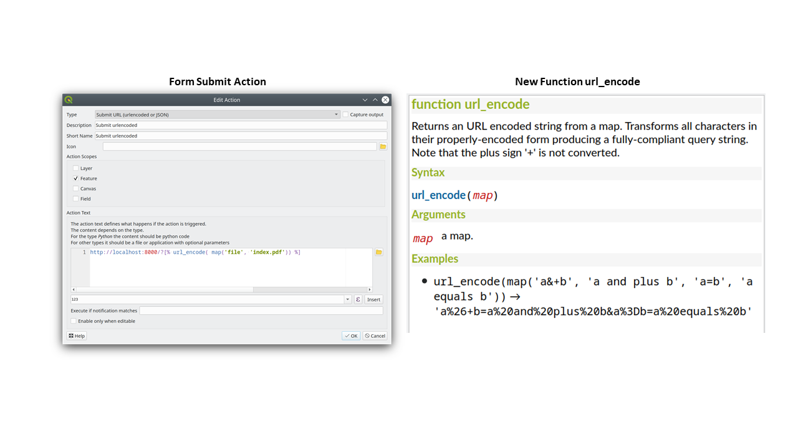
This feature was funded by Kanton Solothurn
This feature was developed by Alessandro Pasotti
Analysis Tools¶
Feature: Add roundness method to curve polygon¶
We added a “roundness” method to QgsCurvePolygon, allowing the calculation of the “roundness” of an area feature based on the formula Roundness = (4 * pi * Area) / Perimeter^2.
This includes the addition of a new expression and a processing tool for calculating roundness. The processing tool creates a new layer with the roundness of each feature in a new field.

This feature was developed by Antoine Facchini
Processing¶
Feature: Extract labels algorithm¶
For 3.24 we added a new tool to QGIS’ processing toolbox: “Extract labels”. As its name hints at, this algorithm extracts label information from a rendered map at a specific extent and scale.
Extracted label information include its position (as point geometries), the associated layer name and feature ID, as well as label appearance properties such as rotation, text, alignment, font family, size, weight, etc.
The algorithm also generates a default symbol-less & labelled style for the output layer which allows for those saved layers to be drag and dropped into projects and have the label drawn exactly as they were exported.
If a map theme is specified when extracting labels, the exported labels will match the visibility and symbology of that theme. If left blank, the project’s current visible layers will be used.
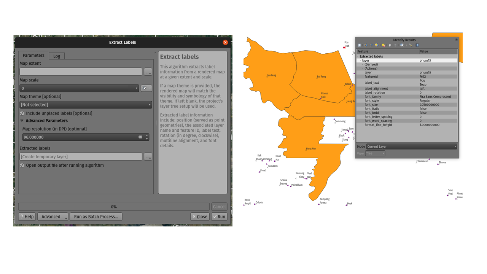
This feature was funded by TEKSI
This feature was developed by Mathieu Pellerin
Feature: Optional output extent parameter for the GDAL Raster Calculator algorithm¶
When running against GDAL 3.3 or newer, QGIS processing toolbox’s GDAL Raster Calculator algorithm now allows you to specify an optional “output extent” parameter. This can be quite useful when working with large datasets, often avoiding the need to create an intermediary clipped raster prior to running the calculator algorithm.
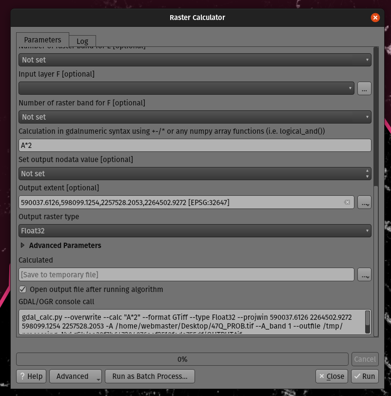
This feature was developed by Mathieu Pellerin
Feature: Optional extent parameter for the GDAL clip raster by mask algorithm¶
We added an optional extent parameter to the GDAL “clip raster by mask” algorithm, which can come in handy when working with large raster datasets.

This feature was developed by Mathieu Pellerin
Feature: Processing history rework¶
QGIS 3.24 includes a partial implementation of the framework described in QEP 130, and ports the Processing history log over to this framework.
This is a much more flexible approach to storing Processing history, as it allows us to store unlimited additional information about the executed tool (including all the input parameters, output results, and the full text log too!). The history log is now stored in a sqlite database instead of the text file previously used, which allows for more efficient storage/retrieval/filtering.
The new framework potentially extends to more than just Processing - it could also be used to store the history of other user operations, such as project edits, layout exports etc!
We’ll be using this framework in future to further extend the Processing history dialog. For 3.24, we’re using it to expose a number of helpful additions to the history dialog:
Right clicking an entry in the log has a new option to copy the execution parameters as a “qgis_process” command line equivalent, giving you a super-easy way to generate qgis_process commands for execution in a CLI.
Right clicking an entry also shows a new “Copy as JSON” option, which copies a JSON string of the input parameters and algorithm settings

This feature was funded by the Research Institute for Nature and Forest, Flemish Govt
This feature was developed by Nyall Dawson
Feature: Advanced actions in Processing dialogs¶
We have added new actions on the processing dialog including copy as qgis_process command, and copy/paste as JSON. Together these actions:
Allows for easy copying of the equivalent PyQGIS command to run the tool using the parameters defined in the dialog
Allow for easy generation of qgis_process commands via the QGIS GUI, including any tricky parameter values like GeoPackage outputs with specific layers
Provide a way for you to copy the settings defined in the dialog in a text format, so that you can store these easily and then restore them later by pasting the values.
Provides an easy way for you to copy the settings into the JSON format consumed by qgis_process, so that it is easy to see the expected format even for complex parameters (like TIN interpolation parameters).

This feature was funded by the Research Institute for Nature and Forest, Flemish Govt
This feature was developed by Nyall Dawson
Feature: Single file exports from Atlas to PDF algorithm¶
You can now export an atlas layout to a single (collated) PDF file using the “Export atlas layout as PDF” processing algorithm.
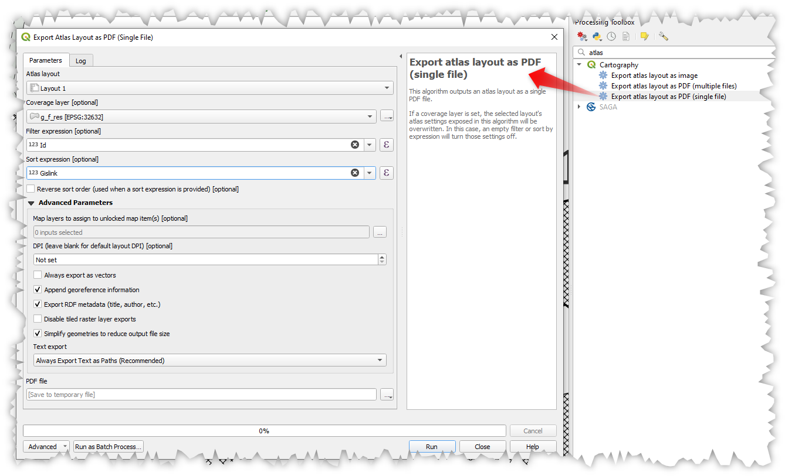
This feature was developed by Nyall Dawson
Feature: Project Models are shown in the Project menu¶
We added a new submenu to the “Project” menu, which will list any Processing models stored within the current project. This gives you a quick way to launch these project-specific models, in either a single or batch mode!

This feature was funded by Kanton Solothurn
This feature was developed by Alessandro Pasotti
Feature: Add point cloud destination parameter and output to Processing¶
We have extended and improved point cloud support in Processing, namely by:
Fixing the filtering of point cloud layers in
QgsProcessingMapLayerComboBox-based widget used for parametersAdding a destination point cloud parameter type and point cloud output types with corresponding widgets. (Currently these are useful for 3rd party providers and plugins which create point cloud outputs.)
Exposing the newly added point cloud output and destination parameters to the
algfactorywrapper
This feature was developed by Alexander Bruy
Feature: Array field support¶
In QGIS 3.24, we’ve made array field types first-class citizen in the Processing toolbox! The following algorithms have all been updated to support array fields:
Refactor algorithm;
Aggregate algorithm;
Add field to attributes table algorithm;
Field calculator algorithm; and
Advanced (i.e. python) field calculator algorithm
This feature was funded by SwissTierras Colombia
This feature was developed by Mathieu Pellerin
Application and Project Options¶
Feature: qgis_process –no-python argument¶
This new, optional command line parameter for the qgis_process command-line tool allows you to skip launching Processing with Python support when it is not required. This can result in a significant improvement in qgis_process startup times!
This feature was funded by North Road
This feature was developed by Nyall Dawson
Feature: Suppress “bad layers” handler on startup¶
We’ve added support for a new command line flag for the qgis executable, which allows you to disable the default dialog which shows when opening a project with missing/broken layers:
[--skipbadlayers] don't prompt for missing layers
example invocation:
./qgis --skipbadlayers./qgis -B
The use case for this is that sometimes users have automation or other post-startup processes happen and do not want to have the startup process interrupted if there are bad layers present in the project. After startup, QGIS will ignore any missing layers, but they will still be marked as broken in the layers list.
This feature was suggested by Giuseppe Baiamonte during, and live coded on, the QGIS Open Day, 17 Dec 2021.
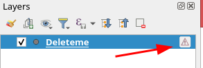
This feature was developed by Tim Sutton
Feature: Parameter values for qgis_process can be specified as a JSON object via stdin¶
We now provide a mechanism to support complex input parameters for algorithms when running the qgis_process command line tool.
To indicate that parameters will be specified via stdin then the qgis_process command must follow the format
qgis_process run algid -
(with a trailing - in place of the usual arguments list).
The JSON object must contain an “inputs” key, which is a map of the input parameter values.
echo "{"inputs": {\"INPUT\": \"my_shape.shp\", DISTANCE: 5}}" | qgis_process run native:buffer -
Additionally, extra settings like the distance units, area units, ellipsoid and project path can be included in this JSON object:
{
'ellipsoid': 'EPSG:7019',
'distance_units': 'feet',
'area_units': 'ha',
'project_path': 'c:/temp/my_project.qgs'
'inputs': {'DISTANCE': 5, ..... }
}
(Specifying input parameters via stdin implies automatically the –json output format for results.)
One big motivation behind this enhancement is to provide a way for the qgis_process R libraries to support parameter types such as aggregates!
This feature was funded by the Research Institute for Nature and Forest, Flemish Govt
This feature was developed by Nyall Dawson
Feature: Run Python script algorithms directly via qgis_process¶
The qgis_process command-line tool now supports running a Python script algorithm directly by specifying the path to the .py file, in place of an algorithm ID or model file path!
This feature was developed by Nyall Dawson
Data Providers¶
Feature: Friendlier errors from XYZ raster tiles, WMS and vector tiles¶
Server errors which occur during XYZ, vector tile or WMS network requests are now shown directly in the QGIS window via the message bar. We’ve made these error messages much more descriptive and helpful, by including the original response error text wherever possible!
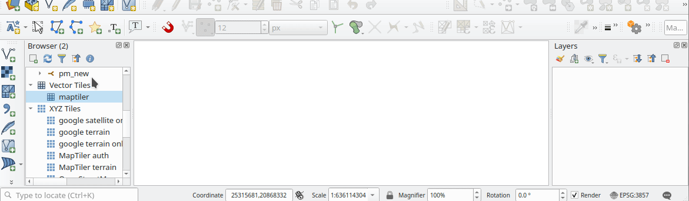
This feature was funded by MapTiler
This feature was developed by Lutra Consulting (Vincent Cloarec)
Feature: Add out-of-the-box connection to Mapzen Global Terrain tiles¶
QGIS now sports built-in support for the Terrarium DEM format for WMS/XYZ layers. In addition, we now have out-of-the-box ability to add Mapzen Global Terrain Tiles hosted on AWS. You can find the new MapZen option in the XYZ section of the browser panel. Users now have an immediately accessible global DEM source for their projects!! See also https://registry.opendata.aws/terrain-tiles/

This feature was developed by Nyall Dawson
Feature: HMAC SHA256 auth method for MapTiler¶
We’ve added a new authentication method specific for MapTiler which allows you to use a token encrypted with HMAC-SHA256.
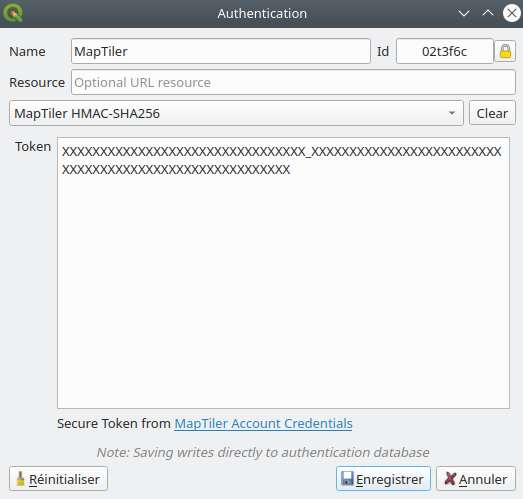
This feature was funded by MapTiler
This feature was developed by Lutra Consulting (Vincent Cloarec)
Feature: Template parameter {usage} for XYZ raster and vector tiles¶
For XYZ tile-based raster layers and for vector tile layers, we now allow the possibility to insert {usage} template parameters (in addition to {x}, {y}, {z}). If present, this parameter will be replaced by the context in which the request is being made.
The possible context values are:
view - when the request comes from 2D or 3D map canvas
export - when the request comes from exporting a layer or exporting a print layout for high-quality output (map previews in print layout designer are classed as “view”)
unknown - when coming from some other context, but the source is unknown
This functionality is useful for MapTiler clients, where they need to recognize the context in which tiles are used in order to bill users accordingly.
This feature was funded by MapTiler
This feature was developed by Lutra Consulting (Vincent Cloarec)
Feature: Convert WMTS/XYZ raster tiles to terrain (DEM)¶
In QGIS 3.24 we’ve introduced the possibility to convert WMTS/XYZ raster datasets to a raster layer of single band float type following a predefined encoding scheme.
You can activate this option and choose an encoding scheme (for now, “MapTiler Terrain RGB” or “Terrarium Terrain RGB” are available) in the source settings of the XYZ connection or in the Data Source Manager when adding a WMST layer.
The selected converter will translate the RGB source values to float values for each pixel. After loading, the layer will be presented as a single band floating point raster layer, ready for styling using a pseudocolor or hill shade renderer!

This feature was funded by MapTiler
This feature was developed by Lutra Consulting (Vincent Cloarec)
Feature: Array field types for scratch layers¶
You can now add array field types directly to newly created scratch layers. (While array field types have previously been supported by scratch layers, there was no way for users to add them when creating a new scratch layer.)

This feature was developed by Mathieu Pellerin
Feature: JSON field types for new GeoPackage layers¶
We’ve added support for creating JSON fields directly to newly created GeoPackage layers. (While JSON field types have previously been supported by GeoPackage layers, there was no way for users to add them when creating a new layer.)
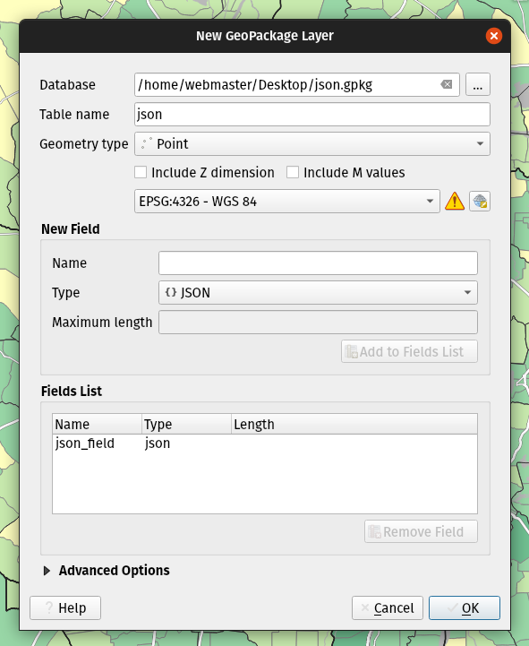
This feature was developed by Mathieu Pellerin
Feature: Delimited text type overrides and other improvements¶
We’ve given some love to the delimited text data provider in 3.24, with several enhancements which include:
Boolean type support and automatic detection
Boolean data types are now first-class citizens, which are automatically recognized when all records in a column contain one of the following values (case insensitive):
t/f
true/false
yes/no
0/1
Boolean fields are also detected from a CSVT file, a GDAL/GeoCSV format e.g.
Integer(Boolean)
You can also add custom string representations for TRUE/FALSE (for example a localized “yes”/”no” value).
Column type override
Column types are automatically determined (by an initial limited scan of the file for immediate feedback followed by a full scan of the file which happens in a separate thread to not block the GUI and is user-interruptible), the types are exposed to the GUI as combo boxes and the user can override the automatically determined types.
Enhanced CSVT support.
CoordX, CoordY, Point(X/Y), WKT are now recognized as specified in https://giswiki.hsr.ch/GeoCSV

This feature was funded by Stadt Freiburg im Breisgau
This feature was developed by Alessandro Pasotti
Feature: New authentication method for HTTP header based authentication¶
A new authentication method is available for network requests which that supports user defined HTTP header authentication. Multiple custom headers can be included in these requests.
This is useful in various scenarios, such as when a WMS requires an API key that is to be used in a HTTP header with the header key being X-API-KEY, which can now be included in requests from QGIS to authenticate against the WMS endpoint.

This feature was developed by Tom C
Feature: Expose secondary PostGIS geometry columns as referenced geometries¶
As discussed in this issue, we have added support for exposing additional geometry columns from the Postgres provider as QgsReferencedGeometry. This allows more efficient interaction with additional geometry columns through the API. For example, in label placement, the additional geometry column can be used instead of the feature geometry. The fields will be represented as WKT [CRS User-Friendly Identifier] in the attribute table.
This can be used in expressions and in the label placement properties tab where you can link the label placement to the second geometry column using the Point property. In the case where you using it for labelling, the second geometry column will be updated automatically if you use the move tool and the columnt type is Geometry. If the column type is text, you could also use that as a second geometry by doing e.g.
geom_from_wkt("my wkt string field")
In this case however, the column will be read only.
So e.g. now in expressions if you have secondary geometry column you can do
buffer("my_second_geom_column", 10)and it will work.
Warning: This changes the behavior of existing projects.
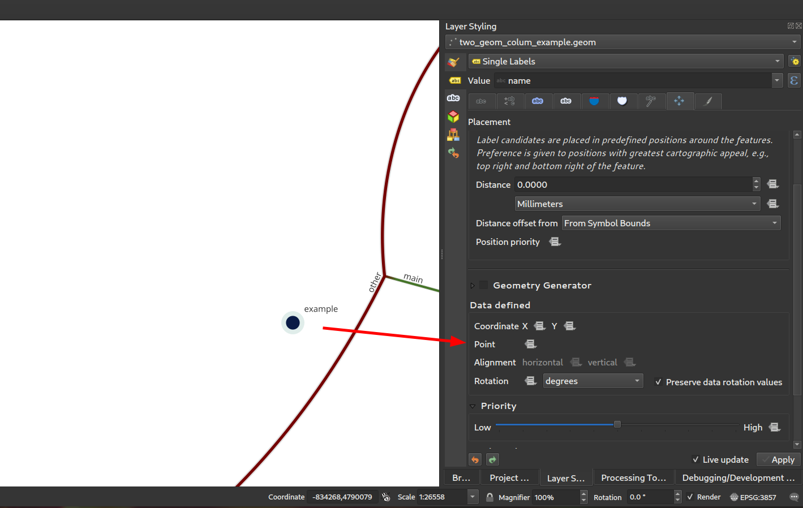
This feature was funded by OPENGIS.ch
This feature was developed by Matthias Kuhn, OPENGIS.ch
QGIS Server¶
Feature: Allow better control of the response flow chain from server filters¶
New filters allow control of the call chain by implementing new filter callbacks that allow returning a control value for stopping propagation. This allows for the better control of streamed data and response flow.
Deprecate
bool QgsFilter::onRequestReady(),bool QgsFilter::onSendResponse(),bool QgsFilter::onResponseComplete()Add new methods
bool QgsFilter::onRequestReady(),bool QgsFilter::onSendResponse(),bool QgsFilter::onResponseComplete()which return boolean values for controlling data flowHandle flow control in
QgsFilterResponseDecorator::flush()
This feature was developed by David Marteau
Notable Fixes¶
Bug fixes by Alessandro Pasotti¶
Bug Title |
URL issues.qgis.org (if reported) |
URL Commit (Github) |
3.22 backport commit (GitHub) |
|---|---|---|---|
Wrong raster projection on HIDPI screens |
TODO |
||
Data Source Manager title not translatable |
TODO |
||
QGIS 3.22 - Identical map names in print composer |
Works for me |
||
Bold and italic attributes of labels that reinitialize |
Works for me |
||
NameError: name ‘QGISAPP’ is not defined when using stop_app() |
Works for me on Linux/master, might be windows only |
||
Virtual layer not loaded correctly after re-opening a project |
TODO |
||
QGIS crashes while calling readLayerXml() |
Works for me |
||
Crash when changing orientation of page in layout |
TODO |
||
“sort” funcionality of attributes table sort numeric fields as text |
TODO |
||
OAPIF: api-key not included when requesting /collections endpoint |
TODO |
||
XML notation if missing from tooltips in vector file writer dialog |
TODO |
||
Ignore out of range option in interpolated symbol renderer creates artifacts if start value is out of range |
TODO |
||
start width > end width is ignored when using the “exact” color interpolation method |
TODO |
||
QGIS Layouts: using “Data defined override” for HTML Source URL not working |
works for me (closed - not a bug) |
||
(Un)force hide form in relation widget |
TODO |
||
Oauth2 authentication protocol does not honors the defined port number in redirect URL in QGIS 3.22.1 |
works for me (left open) |
||
HTML/String-ish QByteArray as result of expression function breaks expression preview display |
TODO |
||
Raster layer exported to GeoPackage with the character ‘ß’ in the name is not immediately loaded in the project |
works for me (closed) |
||
Layout Attribute Table sorting does not work in Print Layouts when column name has spaces |
TODO |
||
Incorrect scale range legend after applying logarithmic graduated symbology to a vector layer |
Risky? |
||
fix server crash |
unreported |
TODO |
|
Load QGIS project from command line from a PostgreSQL project |
TODO |
||
Aggregate function with filter doesn’t work in layout manager |
Works for me (closed) |
||
Value map widget: “value”/”description” inconsistency when table added to print layouts |
TODO |
||
Missing entries in attributetable in layout with atlas at page break |
TODO |
||
Server OAPIF: bbox filter isn’t working if data source CRS is not EPSG:4326/WGS84 |
TODO |
||
Drag & Drop designer control visibility by expression with field IS NOT NULL doesn’t work if the field is configured with html |
Risky? |
These bugfixes were funded by QGIS.ORG (through donations and sustaining memberships)
Bugs fixed by Alessandro Pasotti
Bug fixes by Sandro Santilli¶
Bug Title |
URL issues.qgis.org (if reported) |
URL Commit (Github) |
3.22 backport commit (GitHub) |
|---|---|---|---|
DistanceWithin algorithm failing with PostgreSQL provider |
|||
GH_WORKSPACE -> QGIS_WORKSPACE |
|||
Improve documentation about running tests |
|||
Use variables to set postgresql connection config in authmanager test |
|||
Re-use possibly cached postgis_version from pgsql description method |
|||
Trust primary key of layers setup by DBManager TopoViewer plugin |
|||
Improved debugging output in QgsPostgresConn class |
These bugfixes were funded by QGIS.ORG (through donations and sustaining memberships)
Bugs fixed by Sandro Santilli
Bug fixes by Even Rouault¶
Bug Title |
URL issues.qgis.org (if reported) |
URL Commit (Github) |
3.22 backport commit (GitHub) |
|---|---|---|---|
QGIS 3.21.0: preset transform required “nehpgn.gsb” but downloads “nehpgn.tif” which does not work |
|||
Raster layer misaligns when bbox bigger than projected raster layer |
|||
Filter for WFS layer: The “Tables” button is missing |
Not a bug |
||
Something simpler than SQL to filter a WFS layer |
|||
renaming/deleting columns takes a lot of time on large vectors |
|||
Opening a Vector Geopackage in QGIS alters its file even when no changes are done by user |
|||
MapInfo CRS not correctly recognized |
|||
Crash exporting dxf using “Symbol layer symbology” |
These bugfixes were funded by QGIS.ORG (through donations and sustaining memberships)
Bugs fixed by Even Rouault
Bug fixes by Denis Rouzaud¶
Bug Title |
URL issues.qgis.org (if reported) |
URL Commit (Github) |
3.22 backport commit (GitHub) |
|---|---|---|---|
Trying to add GPKG from data source manager crashes QGIS master |
not relevant |
||
Display name in layer properties is not automatically filled |
|||
Fixes to QgsGeometry::addPart + new test cases |
unreported |
These bugfixes were funded by QGIS.ORG (through donations and sustaining memberships)
Bugs fixed by Denis Rouzaud
Bug fixes by Alex Bruy¶
Bug Title |
URL issues.qgis.org (if reported) |
URL Commit (Github) |
3.22 backport commit (GitHub) |
|---|---|---|---|
Layout picture: data-defined svg parameters should be disabled for incompatible pictures |
|||
TypeError in MetaSearch when adding WFS data |
|||
Split Vector Layer algorithm does not export both null and empty values |
|||
data source manager not opening with correct sub menu for point cloud datasources |
|||
SLD import doesn’t recognize html enconding in ttf font references |
|||
Error opening data loader dialog from MetaSearch |
Works for me |
||
Display name in layer properties is not automatically filled |
|||
No way to add mbtiles file-based MVT package except drag and drop |
|||
“GDAL rasterize overwrite with attribute” does not refresh/reload output |
|||
Delete Column in Matrix Parameter in Graphic Modeler not Working |
|||
Wrong signature of the QgsProcessingParameterMeshDatasetGroups when exporting to Python |
unreported |
||
Error message when GRASS tools cannot be run is (now) wrong |
|||
“Ignore invalid input features” processing setting location is misleading |
|||
Inconsistent number of decimal places in Identify tool |
|||
qgis_process is not showing algorithm providers installed via a python plugin |
|||
Unable to delete files .shp and .dbf using python code (removeMapLayers, deleteShapeFile) |
Works for me |
||
QgsProcessingParameterFile extension option |
Not a bug |
||
Make the labels “edit rule” widget a real dialog with buttons |
|||
Edit form python editor tabs/spaces confusion |
|||
Error when making buffer from empty layer with ‘Dissolve result’ option checked |
|||
QGIS does not replace commas in layer names when exporting to DXF (so is incompatible with AutoCAD) |
These bugfixes were funded by QGIS.ORG (through donations and sustaining memberships)
Bugs fixed by Alex Bruy
Bug fixes by Paul Blottiere¶
Bug Title |
URL issues.qgis.org (if reported) |
URL Commit (Github) |
3.22 backport commit (GitHub) |
|---|---|---|---|
Fixes WFS EXP_FILTER parsing in GetFeature request |
Too risky |
||
Fix output filename when a raster is saved in a format without extension |
unreported |
TODO |
|
WFS GetFeature document and exceptions |
unreported |
TODO |
|
Exluding a print layout in project propteries -> server do not avoid that a GetPrint request can be done for that layout |
TODO |
||
Server: Can’t enable WFS3 API update endpoint (PUT/PATCH) on layers without geometry |
Works for me |
These bugfixes were funded by QGIS.ORG (through donations and sustaining memberships)
Bugs fixed by Pau Blottiere
Bug fixes by Matthias Kuhn¶
Bug Title |
URL issues.qgis.org (if reported) |
URL Commit (Github) |
3.22 backport commit (GitHub) |
|---|---|---|---|
Fix HTTP Post with MultiPart |
not needed |
These bugfixes were funded by QGIS.ORG (through donations and sustaining memberships)
Bugs fixed by Matthias Kuhn
Bug fixes by Nyall Dawson¶
Bug Title |
URL issues.qgis.org (if reported) |
URL Commit (Github) |
3.22 backport commit (GitHub) |
|---|---|---|---|
Add .tsv extension to delimited text supported files filter |
reported on youtube screencast |
pending |
|
Fix line anchor placements are reversed for labels which sit below lines |
unreported |
||
Fix incorrect return code from QgsProcessingModelAlgorithm::fromFile when file does not exist |
unreported |
||
Fix many georeferencer regressions |
multiple |
unreported |
pending |
Avoid some unwanted “unhandled exception” message boxes which can pop up while moving the mouse |
reported on youtube screencast |
||
Don’t use custom palette in crash handler dialog, this results in unreadable text on dark themes |
|||
Don’t slightly colorise the icons for selected items in lists |
not suitable |
||
Fix python exception raised after running in-place algorithm which requires no parameters |
reported on youtube screencast |
||
Fix labelling shown for features out of range of temporal controller dates |
|||
Fix line dependent orientation rendering of curved labels |
|||
When processing is initialized in external scripts, ensure the GRASS, SAGA and OTB providers are included by default |
|||
Show descriptive error when label rotation tool cannot be used because of invalid expressions |
not suitable |
||
QgsRasterDataProvider.block() returns invalid QgsRasterBlock if requested block size exceeds a certain threshold |
|||
Fix missing icons for array field types |
not suitable |
||
Use correct approach to unset data defined field for label position when auxiliary column is removed |
|||
Fix atlas sorting with complex field names |
|||
improve field handling when converting to rule-based |
|||
Fix ‘Save all Styles/Save current Style’ only appears after close/reopen the layer properties window |
not suitable |
||
Fix readability of text when using dark themes |
|||
Fix sqlite errors on startup caused by default style database import logic |
unreported |
not suitable |
|
Fix color widgets incorrectly change colors when mouse is hovered over widget |
unreported |
||
Avoid crs definition errors when closing options dialog |
n/a |
||
Fix duplicate shortcut registered warning on startup |
unreported |
not suitable |
|
Fix scroll wheel events get “stuck” when scrolling to bottom of areas |
unreported |
||
Flag a lot of situations where ballpark transforms are appropriate so warnings are not shown |
|||
Fix crashes when saving layer styles |
not suitable |
||
Fix broken merge features tool |
unreported |
n/a |
|
[mssql] Fix provider on case-sensitive database locales |
|||
[mssql] Fix inserting features when pk attribute name contains special chars |
These bugfixes were funded by QGIS.ORG (through donations and sustaining memberships)
Bugs fixed by Nyall Dawson
Bug fixes by Damiano Lombardi¶
Bug Title |
URL issues.qgis.org (if reported) |
URL Commit (Github) |
3.22 backport commit (GitHub) |
|---|---|---|---|
Fix #47089 wrong rotation point for rotate label tool preview |
These bugfixes were funded by QGIS.ORG (through donations and sustaining memberships)
Bugs fixed by Damiano Lombardi